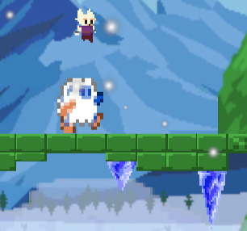
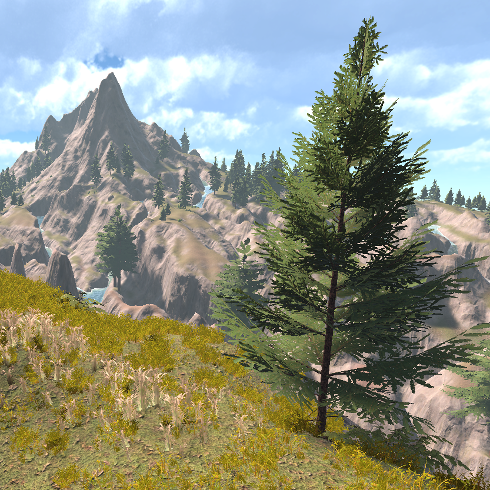
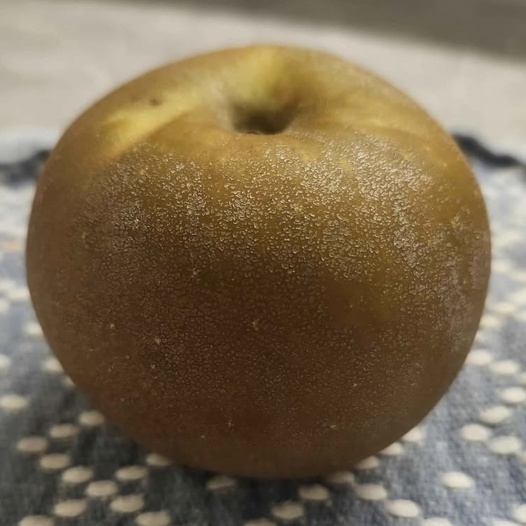

Lucas Slunt
I am a fourth-year Computer Science student at the University of British Columbia’s Okanagan campus.
I love problem-solving, especially when it involves developing efficient algorithms
and creative technical solutions. Outside of academics, I enjoy spending time outdoors and trying different apples.
Below is a selection of some of my favorite creative projects. While some were completed as part of my coursework, many were personal initiatives intended to deepen my understanding of complex topics or simply for the fun of building something new.
Below is a selection of some of my favorite creative projects. While some were completed as part of my coursework, many were personal initiatives intended to deepen my understanding of complex topics or simply for the fun of building something new.

Hello, Stars!
First-place winner of the 2025 Girls in Tech "Hack Attack 2.0" Hackathon, at the University of British Columbia Okanagan. Hello, Stars! is a Duolingo-style web app where users can learn about constellations

ClimATe
2D platformer based on 'Ice Climbers', playable in browser. Climb to the top of the mountain, while constant temperature shifts cause enemies and obstacles to change behaviour.

Virtual World
A large, semi-realistic 3D mountanous terrain filled with rivers, foliage, and mysterious structures. The terrain can be explored, and secrets can be uncovered, through the use of a first person character controller.
Arkus's Fishing
A modification to the game Minecraft that improves the underwhelming fishing gameplay. The mod adds new items, recipes, and mechanics, all while following the existing structure of the games code.

Apples I have Eaten
A collection of all the apples I have eaten. Includes the ability to search for apples and keywords, as well as sorting apples by a number of different criteria, such as name, flavour, and texture.